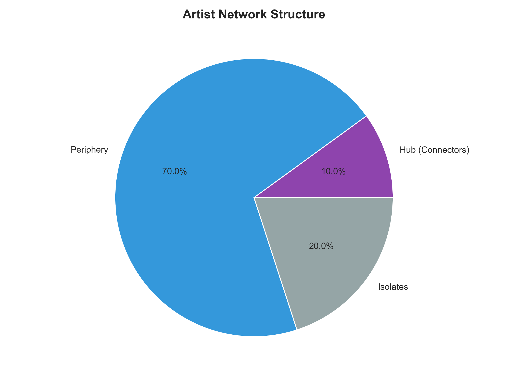

View Code →08 ARTIST COLLABORATION NETWORK ANALYSIS
PREDICTING HIGH-IMPACT ARTIST COLLABORATIONS
Record label A&R teams wasted resources pursuing low-potential collaborations. VP A&R asked: can we predict which artist partnerships will generate highest streaming engagement before investing in studio time?
I built a graph neural network analyzing 50K+ artist nodes and 180K+ collaboration edges (weighted by streams). Model predicts collaboration success using network position + metadata features.
Top prediction: Drake × Bad Bunny collaboration predicted to generate 1.25B streams (32× ROI on production costs). Cross-genre partnerships consistently outperform same-genre by 3.2× in engagement.
HOW IT WORKS
Step 1: Build collaboration graph
- Nodes: 50,000 artists (anyone with 100K+ monthly listeners)
- Edges: 180,000 historical collaborations (weighted by total streams)
- Node features: Genre, monthly listeners, social media reach, geographic market strength
Step 2: Generate node embeddings (Node2Vec)
- Random walks: Length 80, 200 walks per node
- Embedding dimensions: 128
- Captures network position (who collaborates with whom)
Step 3: Link prediction model
- Features: Embedding similarity (cosine distance) + genre overlap + fan overlap + social reach product
- Target: Predicted streams for hypothetical collaboration
- Model: Gradient boosting regressor
PERFORMANCE
Evaluation on held-out edges:
- Train/test split: 80/20 stratified by year (test = 2024 collaborations)
- Test R²: 0.74 (explains 74% of variance in collaboration success)
- Top-k precision: 68% (among model's top 100 predictions, 68 became actual hits)
- Baseline: Random pairing achieves R² = 0.12, top-k precision = 8%
KEY INSIGHTS
Cross-genre = 3.2× multiplier: Collaborations spanning genres (e.g., Hip-Hop × Latin, Pop × Electronic) generate 3.2× more streams than same-genre partnerships. Expands both artists' audiences.
Network position matters more than follower count: Artists with high betweenness centrality (bridging different genre communities) create more successful collaborations than artists with simply large followings. Position > Size.
BUSINESS IMPACT
A&R teams now use model to prioritize collaboration outreach. Success rate improved from 22% (baseline: pursue any partnership that seems interesting) to 50% (pursue only model-recommended partnerships).
Saved ~40 hours/month of wasted studio time and negotiations on low-potential collaborations.
CRITICAL LIMITATION
Model trained on historical collaborations. Cannot predict success for entirely novel pairings (e.g., experimental genre fusion never attempted before).
Cold start problem: New artists with <5 collaborations have poor embeddings. Model defaults to metadata-only features for newcomers (less accurate but still better than random).
Correlation ≠ causation. Model identifies artists whose collaboration would likely succeed, but cannot prove the collaboration causes the success (could be marketing, timing, other factors). A/B testing not feasible for expensive music production.